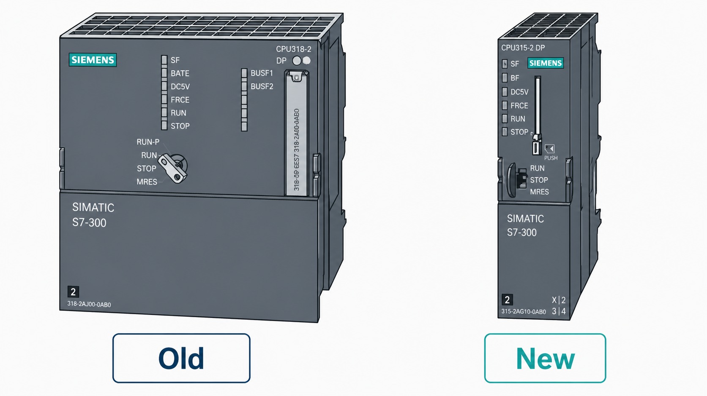

Texto Explicativo da Aula
A CPU como Centro de Processamento do CLP
A CPU (Central Processing Unit — Unidade Central de Processamento) é o módulo mais importante de um Controlador Lógico Programável. É ela que confere ao CLP sua capacidade de "pensar" e tomar decisões automatizadas, razão pela qual é frequentemente chamada de cérebro do sistema.
A função primária da CPU é executar o programa de controle desenvolvido pelo engenheiro ou técnico responsável pela automação. Esse programa contém toda a lógica necessária para monitorar as entradas do processo e acionar as saídas de forma adequada, garantindo o funcionamento correto e seguro da máquina ou instalação automatizada.
A CPU realiza essa tarefa de forma cíclica e contínua por meio do chamado ciclo de varredura (scan cycle), que envolve três etapas principais executadas repetidamente em milissegundos:
- Leitura das entradas: a CPU captura o estado atual de todos os sinais de entrada conectados aos módulos de I/O.
- Execução do programa: a lógica programada é processada com base nos valores lidos nas entradas.
- Atualização das saídas: os resultados do processamento são enviados aos módulos de saída, que acionam os dispositivos de campo correspondentes.
Dado o papel central da CPU no sistema, qualquer falha em seu funcionamento tem consequências imediatas e graves: se a CPU parar de operar, todo o sistema controlado pelo CLP será interrompido. Por esse motivo, em aplicações críticas, como processos contínuos ou sistemas de segurança, podem ser adotadas arquiteturas redundantes, com duas CPUs operando em paralelo — uma ativa e outra em modo de espera (standby) —, garantindo a continuidade operacional mesmo em caso de falha em uma delas.
Categorias de CPU: Modelos Antigos e Novos
Tomando como referência a família de CLPs Siemens S7 — uma das mais amplamente utilizadas na indústria mundial —, as CPUs podem ser classificadas em duas grandes categorias com base em sua concepção e características físicas: CPUs de estilo antigo e CPUs de estilo novo.
Embora ambas executem essencialmente as mesmas funções de processamento, existem diferenças visuais e funcionais importantes entre elas, que impactam diretamente a forma como o técnico interage com o equipamento durante a instalação, operação e manutenção.

CPUs de Estilo Antigo
As CPUs de estilo antigo foram desenvolvidas nas primeiras gerações da linha S7 e apresentam características físicas que refletem o estágio tecnológico da época de seu lançamento. Entre seus elementos distintivos, destacam-se:
Chave seletora de modo de operação: geralmente uma chave física rotativa com múltiplas posições, que permite ao operador selecionar manualmente entre os modos de operação da CPU. As posições mais comuns são:
- RUN: a CPU executa o programa normalmente.
- STOP: a CPU interrompe a execução do programa; as saídas são desativadas.
- MRES (Memory Reset): posição utilizada para inicializar (resetar) a memória da CPU, apagando o programa e retornando a CPU ao estado de fábrica.
Slot para cartão de memória (memory card): nas CPUs de estilo antigo, o slot destinado ao cartão de memória ocupa uma posição específica no painel frontal do módulo, geralmente protegida por uma tampa removível. O cartão de memória é utilizado para armazenar o programa de forma não volátil, transferir programas entre CPUs ou expandir a capacidade de memória do módulo.
CPUs de Estilo Novo
As CPUs de estilo novo representam a evolução tecnológica da linha S7, incorporando melhorias tanto em desempenho quanto em ergonomia e funcionalidade. Suas principais diferenças em relação às CPUs antigas incluem:
Chave seletora de modo redesenhada: nas CPUs mais novas, a chave seletora pode ter um formato diferente — por vezes mais compacta ou com menos posições físicas — e sua localização no painel frontal pode variar em relação aos modelos anteriores. Em algumas CPUs modernas, como as da linha S7-1500, o controle de modo de operação é realizado diretamente pelo software de programação (TIA Portal), reduzindo ou eliminando a necessidade de chave física.
Novo posicionamento do slot para cartão de memória: nas CPUs de estilo novo, o slot do cartão de memória foi reposicionado no painel frontal, geralmente em local de acesso mais conveniente. Além disso, o tipo de cartão de memória utilizado pode ser diferente — as CPUs mais modernas utilizam cartões SIMATIC de formato SD, enquanto as antigas utilizavam cartões de memória do tipo MMC (MultiMediaCard) ou formatos proprietários.
Conhecer essas diferenças é fundamental para o técnico que trabalha com instalação, manutenção e programação de CLPs, pois o procedimento de troca de cartão de memória, reset de CPU e seleção de modo de operação varia conforme a geração do equipamento.
Outros Elementos Presentes no Painel Frontal da CPU
Além da chave seletora e do slot de memória, o painel frontal de uma CPU de CLP tipicamente apresenta outros elementos importantes:
LEDs de status: indicadores luminosos que fornecem informações visuais rápidas sobre o estado da CPU. Os mais comuns incluem:
- PWR (Power): indica que a CPU está recebendo alimentação elétrica.
- RUN: aceso quando a CPU está executando o programa.
- STOP: aceso quando a CPU está parada.
- ERROR/FAULT: indica a presença de erros ou falhas no sistema.
- MAINT (Maintenance): presente em CPUs mais modernas, indica necessidade de manutenção ou substituição de cartão.
Portas de comunicação: a CPU geralmente possui uma ou mais interfaces de comunicação integradas, como portas MPI, Profibus DP ou Profinet (Ethernet industrial), utilizadas para conectar a CPU ao software de programação, a outros CLPs ou a dispositivos de campo e supervisórios.
Bateria de backup (em alguns modelos): algumas CPUs possuem uma bateria interna que mantém os dados da memória RAM (como o horário do relógio interno e dados de remanência) mesmo em caso de falta de energia elétrica.
Importância da Seleção Correta da CPU
A escolha da CPU adequada para uma aplicação é uma das decisões mais importantes no projeto de um sistema CLP. Os principais critérios de seleção incluem:
Exemplo Prático Aplicado
Cenário: Identificação e Preparação de uma CPU Siemens S7 para Instalação
Um técnico de automação é designado para substituir a CPU defeituosa de um CLP Siemens S7-300 que controla uma linha de envase em uma indústria de bebidas. O passo a passo a seguir ilustra como o conhecimento sobre os tipos de CPU é aplicado na prática:
Passo 1 - Identificação do modelo da CPU defeituosa
O técnico verifica a etiqueta de identificação da CPU instalada no rack e identifica o modelo: CPU 315-2 DP. Trata-se de uma CPU de estilo antigo da linha S7-300, com chave seletora rotativa e slot de cartão MMC no painel frontal.
Passo 2 - Verificação do modo de operação antes da intervenção
Com o sistema ainda energizado (porém em modo seguro), o técnico observa os LEDs de status da CPU: o LED de STOP está aceso, confirmando que a CPU não está executando o programa. Isso foi feito pelo operador ao mover a chave seletora para a posição STOP antes de acionar a equipe de manutenção.
Passo 3 - Remoção do cartão de memória
O técnico abre a tampa do slot de memória da CPU antiga e remove o cartão MMC, que contém o programa de controle da linha de envase. Esse cartão será inserido na nova CPU de reposição, garantindo que o programa seja preservado.
Passo 4 - Análise da CPU de reposição disponível no estoque
O estoque possui apenas uma CPU de estilo novo: CPU 315-2 PN/DP, que é compatível com o rack existente, mas possui diferenças físicas em relação à CPU antiga — chave seletora em posição diferente e slot de memória reposicionado no painel frontal.
Passo 5 - Instalação da nova CPU e inserção do cartão de memória
A nova CPU é instalada no slot correspondente do rack. O técnico localiza o slot do cartão de memória (agora em posição diferente, conforme a nova geração) e insere o cartão MMC com o programa.
Passo 6 - Energização e verificação dos LEDs
Após a energização, o técnico observa os LEDs: PWR aceso (alimentação OK) e STOP aceso (CPU parada, aguardando comando). O técnico move a chave seletora para a posição RUN e o LED RUN acende, confirmando que a CPU está executando o programa corretamente.
Passo 7 - Verificação operacional do processo
O técnico comunica ao operador que a CPU foi substituída com sucesso. A linha de envase retoma a operação normal, confirmando que o programa foi carregado e executado corretamente pela nova CPU.
Questões de Múltipla Escolha
-
Qual é a função principal da CPU em um sistema CLP?
A) Fornecer tensão de alimentação para os módulos de I/O do rack
B) Processar o programa de controle e coordenar as operações do sistema
C) Realizar a interface física entre os sensores de campo e o rack do CLP
D) Armazenar exclusivamente os dados históricos do processo para análise
-
O que acontece com o sistema controlado por um CLP caso a CPU deixe de funcionar?
A) Os módulos de I/O assumem o controle do processo automaticamente
B) Apenas as saídas analógicas são desativadas; as digitais continuam operando
C) Todo o sistema para de funcionar, pois a CPU é o centro de processamento
D) O módulo de alimentação assume as funções da CPU temporariamente
-
Qual das alternativas descreve corretamente o ciclo de varredura (scan cycle) executado pela CPU?
A) Atualizar saídas → Executar programa → Ler entradas
B) Ler entradas → Executar programa → Atualizar saídas
C) Executar programa → Ler entradas → Atualizar saídas
D) Ler entradas → Atualizar saídas → Executar programa
-
Na família Siemens S7, qual é o principal critério que diferencia as CPUs de estilo antigo das de estilo novo?
A) A tensão de alimentação utilizada pelo módulo
B) O protocolo de comunicação industrial suportado
C) O design da chave seletora de modo e a localização do slot do cartão de memória
D) A capacidade máxima de módulos de I/O que podem ser conectados ao rack
-
A posição MRES (Memory Reset) na chave seletora de uma CPU S7 tem como função:
A) Colocar a CPU em modo de operação de alta velocidade para processos críticos
B) Inicializar a memória da CPU, apagando o programa e retornando ao estado de fábrica
C) Ativar o modo de comunicação com o software de programação via porta MPI
D) Transferir automaticamente o programa do cartão de memória para a RAM da CPU
-
Em aplicações industriais críticas, como processos contínuos, qual recurso é utilizado para garantir a continuidade operacional mesmo em caso de falha da CPU?
A) Instalação de um módulo de função (FM) dedicado ao controle de emergência
B) Uso de um módulo de comunicação (CP) como processador de backup
C) Adoção de arquitetura redundante com duas CPUs, uma ativa e outra em standby
D) Configuração da chave seletora em posição de segurança automática
-
Um técnico observa que o LED denominado "STOP" está aceso na CPU de um CLP S7. Isso indica que:
A) A CPU está operando normalmente e executando o programa de controle
B) Há uma falha crítica de hardware que requer substituição imediata do módulo
C) A CPU está parada e não está executando o programa; as saídas estão desativadas
D) A CPU está realizando a varredura de diagnóstico interno antes de iniciar o programa
-
Para que serve o cartão de memória instalado na CPU de um CLP?
A) Fornecer energia de backup para a CPU em caso de falta de alimentação elétrica
B) Armazenar o programa de controle de forma não volátil e permitir a transferência entre CPUs
C) Ampliar o número de portas de comunicação disponíveis na CPU
D) Registrar exclusivamente os alarmes e falhas do sistema para análise posterior
-
Um engenheiro precisa selecionar uma CPU para uma aplicação com alta velocidade de resposta, grande número de sinais de I/O e comunicação via Profinet. Qual critério NÃO é relevante para essa seleção?
A) Velocidade de processamento e tempo de ciclo de varredura
B) Disponibilidade de porta Profinet integrada na CPU
C) Cor do painel frontal e dimensões estéticas do módulo
D) Capacidade de memória e número máximo de I/Os suportados
-
Durante a substituição de uma CPU Siemens S7 de estilo antigo por uma de estilo novo, o técnico deve estar atento a qual diferença prática importante?
A) A nova CPU opera com tensão de alimentação diferente e requer nova fonte de alimentação
B) O slot do cartão de memória e a posição da chave seletora podem estar em locais diferentes no painel frontal
C) A nova CPU não é compatível com os módulos de I/O da geração anterior, exigindo substituição completa do rack
D) O programa de controle deve ser completamente reescrito, pois as linguagens de programação são incompatíveis
Gabarito
1 - B | 2 - C | 3 - B | 4 - C | 5 - B | 6 - C | 7 - C | 8 - B | 9 - C | 10 - B